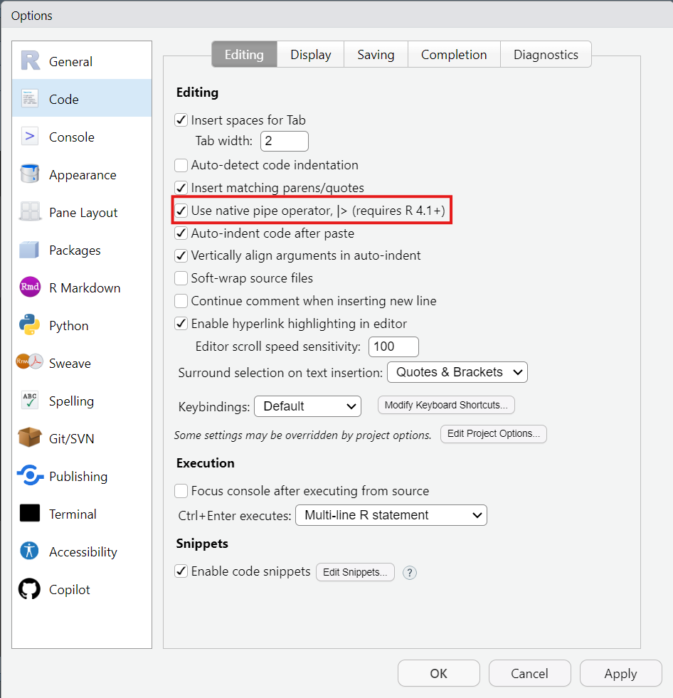

library(tidyverse)
library(nycflights13)Introdução ao R
Transformação de dados: linhas
Introdução
Transformações
- É raro que os dados estejam da forma certa para fazer análises ou gráficos
- Transformações:
- Criar novas variáveis
- Resumir dados
- Renomear variáveis
- Reordenar casos
dplyrnycflights13
Pacotes
Carregue os pacotes abaixo:
nycflights13::flights
Dados de pontualidade de todos os voos que partiram de Nova York (ou seja, JFK, LGA ou EWR) em 2013 retirados do US Bureau of Transportation Statistics
- Formato: um banco de dados com 336776 observações e 19 variáveis
year,month,day: data de partidadep_time,arr_time: Horários reais de partida e chegada (formato HHMM ou HMM), fuzo horário localsched_dep_time,sched_arr_time: horários programados de partida e chegada (formato HHMM ou HMM), fuzo horário localdep_delay,arr_delay: atrasos de partida e chegada, em minutos. Tempos negativos representam partidas/chegadas antecipadascarrier: abreviação de transportadora de duas letras. Veja o banco de dadosairlinespara obter os nomeflight: número do vootailnum: Número da cauda do avião. Veja o banco de dadosplanespara metadados adicionaisorigin, dest: Origem e destino. Veja o banco de dadosairportspara metadados adicionaisair_time: quantidade de tempo gasto no ar, em minutosdistance: distância entre aeroportos, em milhashour,minute: horário de partida programado dividido em horas e minutostime_hour: Data e hora programadas do voo como uma dataPOSIXct. Junto com aorigin, pode ser usado para unir dados de voos a dados meteorológicos (veja o banco de dadosweather)
nycflights13::flights
flights
#> # A tibble: 336,776 × 19
#> year month day dep_time sched_dep_time dep_delay arr_time sched_arr_time
#> <int> <int> <int> <int> <int> <dbl> <int> <int>
#> 1 2013 1 1 517 515 2 830 819
#> 2 2013 1 1 533 529 4 850 830
#> 3 2013 1 1 542 540 2 923 850
#> 4 2013 1 1 544 545 -1 1004 1022
#> 5 2013 1 1 554 600 -6 812 837
#> 6 2013 1 1 554 558 -4 740 728
#> # ℹ 336,770 more rows
#> # ℹ 11 more variables: arr_delay <dbl>, carrier <chr>, flight <int>, …nycflights13::flights
- tibble: tipo especial de banco de dados usado pelo
tydiverse - projetados para grandes conjuntos de dados
- mostram apenas as primeiras linhas e apenas as colunas que cabem na tela
- para ver todas as colunas:
glimpse
nycflights13::flights
glimpse(flights)
#> Rows: 336,776
#> Columns: 19
#> $ year <int> 2013, 2013, 2013, 2013, 2013, 2013, 2013, 2013, 2013…
#> $ month <int> 1, 1, 1, 1, 1, 1, 1, 1, 1, 1, 1, 1, 1, 1, 1, 1, 1, 1…
#> $ day <int> 1, 1, 1, 1, 1, 1, 1, 1, 1, 1, 1, 1, 1, 1, 1, 1, 1, 1…
#> $ dep_time <int> 517, 533, 542, 544, 554, 554, 555, 557, 557, 558, 55…
#> $ sched_dep_time <int> 515, 529, 540, 545, 600, 558, 600, 600, 600, 600, 60…
#> $ dep_delay <dbl> 2, 4, 2, -1, -6, -4, -5, -3, -3, -2, -2, -2, -2, -2,…
#> $ arr_time <int> 830, 850, 923, 1004, 812, 740, 913, 709, 838, 753, 8…
#> $ sched_arr_time <int> 819, 830, 850, 1022, 837, 728, 854, 723, 846, 745, 8…
#> $ arr_delay <dbl> 11, 20, 33, -18, -25, 12, 19, -14, -8, 8, -2, -3, 7,…
#> $ carrier <chr> "UA", "UA", "AA", "B6", "DL", "UA", "B6", "EV", "B6"…
#> $ flight <int> 1545, 1714, 1141, 725, 461, 1696, 507, 5708, 79, 301…
#> $ tailnum <chr> "N14228", "N24211", "N619AA", "N804JB", "N668DN", "N…
#> $ origin <chr> "EWR", "LGA", "JFK", "JFK", "LGA", "EWR", "EWR", "LG…
#> $ dest <chr> "IAH", "IAH", "MIA", "BQN", "ATL", "ORD", "FLL", "IA…
#> $ air_time <dbl> 227, 227, 160, 183, 116, 150, 158, 53, 140, 138, 149…
#> $ distance <dbl> 1400, 1416, 1089, 1576, 762, 719, 1065, 229, 944, 73…
#> $ hour <dbl> 5, 5, 5, 5, 6, 5, 6, 6, 6, 6, 6, 6, 6, 6, 6, 5, 6, 6…
#> $ minute <dbl> 15, 29, 40, 45, 0, 58, 0, 0, 0, 0, 0, 0, 0, 0, 0, 59…
#> $ time_hour <dttm> 2013-01-01 05:00:00, 2013-01-01 05:00:00, 2013-01-0…nycflights13::flights
- Tipo de cada variável
<int>: números inteiros<dbl>: números reais<chr>: caracteres<dttm>: data e hora
Banco para exercícios: mpg
Este conjunto de dados contém um subconjunto dos dados de economia de combustível que a EPA disponibiliza em https://fueleconomy.gov/. Ele contém apenas modelos que tiveram um novo lançamento a cada ano entre 1999 e 2008 - isso foi usado como um proxy para a popularidade do carro.
- Formato: Um banco de dados com 234 observações e 11 variáveis
manufacturer: nome do fabricantemodel: nome do modelodispl: cilindrada do motor, em litrosyear: ano de fabricaçãocyl: número de cilindrostrans: tipo de câmbio (transmissão)drv: tipo de traçãocty: milhas por galão na cidadehwy: milhas por galão na estradafl: tipo de combustívelclass: tipo de carro
Exercício
01:00
- Use a função
glimpsepara olhar as variáveis do bancompg
Resposta
glimpse(mpg)
#> Rows: 234
#> Columns: 11
#> $ manufacturer <chr> "audi", "audi", "audi", "audi", "audi", "audi", "audi"…
#> $ model <chr> "a4", "a4", "a4", "a4", "a4", "a4", "a4", "a4 quattro"…
#> $ displ <dbl> 1.8, 1.8, 2.0, 2.0, 2.8, 2.8, 3.1, 1.8, 1.8, 2.0, 2.0,…
#> $ year <int> 1999, 1999, 2008, 2008, 1999, 1999, 2008, 1999, 1999, …
#> $ cyl <int> 4, 4, 4, 4, 6, 6, 6, 4, 4, 4, 4, 6, 6, 6, 6, 6, 6, 8, …
#> $ trans <chr> "auto(l5)", "manual(m5)", "manual(m6)", "auto(av)", "a…
#> $ drv <chr> "f", "f", "f", "f", "f", "f", "f", "4", "4", "4", "4",…
#> $ cty <int> 18, 21, 20, 21, 16, 18, 18, 18, 16, 20, 19, 15, 17, 17…
#> $ hwy <int> 29, 29, 31, 30, 26, 26, 27, 26, 25, 28, 27, 25, 25, 25…
#> $ fl <chr> "p", "p", "p", "p", "p", "p", "p", "p", "p", "p", "p",…
#> $ class <chr> "compact", "compact", "compact", "compact", "compact",…O Básico do dplyr
- Verbos do dplyr (funções): manipulação de dados
- Primeiro argumento: banco de dados
- Argumentos subsequentes: quais colunas operar
- Nomes das variáveis sem aspas
- Saída: novo banco de dados
O Básico do dplyr
filter(mpg, manufacturer == "ford")
#> # A tibble: 25 × 11
#> manufacturer model displ year cyl trans drv cty hwy
#> <chr> <chr> <dbl> <int> <int> <chr> <chr> <int> <int>
#> 1 ford expedition 2wd 4.6 1999 8 auto(l4) r 11 17
#> 2 ford expedition 2wd 5.4 1999 8 auto(l4) r 11 17
#> 3 ford expedition 2wd 5.4 2008 8 auto(l6) r 12 18
#> 4 ford explorer 4wd 4 1999 6 auto(l5) 4 14 17
#> 5 ford explorer 4wd 4 1999 6 manual(m5) 4 15 19
#> 6 ford explorer 4wd 4 1999 6 auto(l5) 4 14 17
#> # ℹ 19 more rows
#> # ℹ 2 more variables: fl <chr>, class <chr>O Básico do dplyr
select(mpg, model)
#> # A tibble: 234 × 1
#> model
#> <chr>
#> 1 a4
#> 2 a4
#> 3 a4
#> 4 a4
#> 5 a4
#> 6 a4
#> # ℹ 228 more rowsO Básico do dplyr
pipe: |>: “e então”
mpg |>
glimpse()
#> Rows: 234
#> Columns: 11
#> $ manufacturer <chr> "audi", "audi", "audi", "audi", "audi", "audi", "audi"…
#> $ model <chr> "a4", "a4", "a4", "a4", "a4", "a4", "a4", "a4 quattro"…
#> $ displ <dbl> 1.8, 1.8, 2.0, 2.0, 2.8, 2.8, 3.1, 1.8, 1.8, 2.0, 2.0,…
#> $ year <int> 1999, 1999, 2008, 2008, 1999, 1999, 2008, 1999, 1999, …
#> $ cyl <int> 4, 4, 4, 4, 6, 6, 6, 4, 4, 4, 4, 6, 6, 6, 6, 6, 6, 8, …
#> $ trans <chr> "auto(l5)", "manual(m5)", "manual(m6)", "auto(av)", "a…
#> $ drv <chr> "f", "f", "f", "f", "f", "f", "f", "4", "4", "4", "4",…
#> $ cty <int> 18, 21, 20, 21, 16, 18, 18, 18, 16, 20, 19, 15, 17, 17…
#> $ hwy <int> 29, 29, 31, 30, 26, 26, 27, 26, 25, 28, 27, 25, 25, 25…
#> $ fl <chr> "p", "p", "p", "p", "p", "p", "p", "p", "p", "p", "p",…
#> $ class <chr> "compact", "compact", "compact", "compact", "compact",…Configurar o RStudio para usar o pipe nativo (|>)

|>
mpg |>
filter(manufacturer == "audi") |>
group_by(trans) |>
summarise(
"média na cidade" = mean(cty),
"média na rodovia" = mean(hwy)
)
#> # A tibble: 5 × 3
#> trans `média na cidade` `média na rodovia`
#> <chr> <dbl> <dbl>
#> 1 auto(av) 19.5 28.5
#> 2 auto(l5) 16 25.8
#> 3 auto(s6) 17.2 25
#> 4 manual(m5) 18.5 26.5
#> 5 manual(m6) 18.3 28|>
- Atalho de teclado (windows)
- ctrl + shift + m
- Atalho de teclado (mac os)
- cmd + shift + m
Linhas - rows
Funções para as linhas (casos/sujeitos/observações)
filter()
- filtra (mantém | deixa passar) linhas baseado em valores das colunas (variáveis)
- primeiro argumento: banco de dados
- segundo e subsequentes: condições que devem ser verdade para manter a linha (caso)
filter()
flights |>
filter(dep_delay > 120)
#> # A tibble: 9,723 × 19
#> year month day dep_time sched_dep_time dep_delay arr_time sched_arr_time
#> <int> <int> <int> <int> <int> <dbl> <int> <int>
#> 1 2013 1 1 848 1835 853 1001 1950
#> 2 2013 1 1 957 733 144 1056 853
#> 3 2013 1 1 1114 900 134 1447 1222
#> 4 2013 1 1 1540 1338 122 2020 1825
#> 5 2013 1 1 1815 1325 290 2120 1542
#> 6 2013 1 1 1842 1422 260 1958 1535
#> # ℹ 9,717 more rows
#> # ℹ 11 more variables: arr_delay <dbl>, carrier <chr>, flight <int>, …Exercício
02:00
No banco de dados mpg, encontre os carros que tem um rendimento na cidade maior do que 17 milhas por galão (cty)
Resposta
mpg |>
filter(cty > 17)
#> # A tibble: 102 × 11
#> manufacturer model displ year cyl trans drv cty hwy fl
#> <chr> <chr> <dbl> <int> <int> <chr> <chr> <int> <int> <chr>
#> 1 audi a4 1.8 1999 4 auto(l5) f 18 29 p
#> 2 audi a4 1.8 1999 4 manual(m5) f 21 29 p
#> 3 audi a4 2 2008 4 manual(m6) f 20 31 p
#> 4 audi a4 2 2008 4 auto(av) f 21 30 p
#> 5 audi a4 2.8 1999 6 manual(m5) f 18 26 p
#> 6 audi a4 3.1 2008 6 auto(av) f 18 27 p
#> # ℹ 96 more rows
#> # ℹ 1 more variable: class <chr>Operadores lógicos
>maior que>=maior ou igual que<menor que<=menor ou igual que==igual a!=não é igual a
Operadores lógicos
- Combinar codições:
&“e” (“verifique ambas as condições”),“e” (“verifique ambas as condições”)|“ou” (“verifique qualquer uma das condições”)
Operadores lógicos
flights |>
filter(day == 1 & month == 1)
#> # A tibble: 842 × 19
#> year month day dep_time sched_dep_time dep_delay arr_time sched_arr_time
#> <int> <int> <int> <int> <int> <dbl> <int> <int>
#> 1 2013 1 1 517 515 2 830 819
#> 2 2013 1 1 533 529 4 850 830
#> 3 2013 1 1 542 540 2 923 850
#> 4 2013 1 1 544 545 -1 1004 1022
#> 5 2013 1 1 554 600 -6 812 837
#> 6 2013 1 1 554 558 -4 740 728
#> # ℹ 836 more rows
#> # ℹ 11 more variables: arr_delay <dbl>, carrier <chr>, flight <int>, …Exercício
02:00
No banco de dados mpg, encontre os carros da fabricante (manufacturer) “jeep” que têm 6 cilindros (cyl)
Resposta
mpg |>
filter(manufacturer == "jeep" & cyl == 6)
#> # A tibble: 3 × 11
#> manufacturer model displ year cyl trans drv cty hwy
#> <chr> <chr> <dbl> <int> <int> <chr> <chr> <int> <int>
#> 1 jeep grand cherokee 4… 3 2008 6 auto(l5) 4 17 22
#> 2 jeep grand cherokee 4… 3.7 2008 6 auto(l5) 4 15 19
#> 3 jeep grand cherokee 4… 4 1999 6 auto(l4) 4 15 20
#> # ℹ 2 more variables: fl <chr>, class <chr>Resposta
mpg |>
filter(manufacturer == "jeep", cyl == 6)
#> # A tibble: 3 × 11
#> manufacturer model displ year cyl trans drv cty hwy
#> <chr> <chr> <dbl> <int> <int> <chr> <chr> <int> <int>
#> 1 jeep grand cherokee 4… 3 2008 6 auto(l5) 4 17 22
#> 2 jeep grand cherokee 4… 3.7 2008 6 auto(l5) 4 15 19
#> 3 jeep grand cherokee 4… 4 1999 6 auto(l4) 4 15 20
#> # ℹ 2 more variables: fl <chr>, class <chr>Operadores lógicos
flights |>
filter(month == 1 | month == 2)
#> # A tibble: 51,955 × 19
#> year month day dep_time sched_dep_time dep_delay arr_time sched_arr_time
#> <int> <int> <int> <int> <int> <dbl> <int> <int>
#> 1 2013 1 1 517 515 2 830 819
#> 2 2013 1 1 533 529 4 850 830
#> 3 2013 1 1 542 540 2 923 850
#> 4 2013 1 1 544 545 -1 1004 1022
#> 5 2013 1 1 554 600 -6 812 837
#> 6 2013 1 1 554 558 -4 740 728
#> # ℹ 51,949 more rows
#> # ℹ 11 more variables: arr_delay <dbl>, carrier <chr>, flight <int>, …Operadores lógicos
# jução do `==` e do `|`
flights |>
filter(month %in% c(1,2))
#> # A tibble: 51,955 × 19
#> year month day dep_time sched_dep_time dep_delay arr_time sched_arr_time
#> <int> <int> <int> <int> <int> <dbl> <int> <int>
#> 1 2013 1 1 517 515 2 830 819
#> 2 2013 1 1 533 529 4 850 830
#> 3 2013 1 1 542 540 2 923 850
#> 4 2013 1 1 544 545 -1 1004 1022
#> 5 2013 1 1 554 600 -6 812 837
#> 6 2013 1 1 554 558 -4 740 728
#> # ℹ 51,949 more rows
#> # ℹ 11 more variables: arr_delay <dbl>, carrier <chr>, flight <int>, …Operadores lógicos
# jução do `==` e do `|`
flights |>
filter(month %in% c(1,2,6,11))
#> # A tibble: 107,466 × 19
#> year month day dep_time sched_dep_time dep_delay arr_time sched_arr_time
#> <int> <int> <int> <int> <int> <dbl> <int> <int>
#> 1 2013 1 1 517 515 2 830 819
#> 2 2013 1 1 533 529 4 850 830
#> 3 2013 1 1 542 540 2 923 850
#> 4 2013 1 1 544 545 -1 1004 1022
#> 5 2013 1 1 554 600 -6 812 837
#> 6 2013 1 1 554 558 -4 740 728
#> # ℹ 107,460 more rows
#> # ℹ 11 more variables: arr_delay <dbl>, carrier <chr>, flight <int>, …Exercício
02:00
No banco de dados mpg, localize os carros que tem 6 ou 8 cilindors (cyl)
Resposta
mpg |>
filter(cyl == 6 | cyl == 8)
#> # A tibble: 149 × 11
#> manufacturer model displ year cyl trans drv cty hwy
#> <chr> <chr> <dbl> <int> <int> <chr> <chr> <int> <int>
#> 1 audi a4 2.8 1999 6 auto(l5) f 16 26
#> 2 audi a4 2.8 1999 6 manual(m5) f 18 26
#> 3 audi a4 3.1 2008 6 auto(av) f 18 27
#> 4 audi a4 quattro 2.8 1999 6 auto(l5) 4 15 25
#> 5 audi a4 quattro 2.8 1999 6 manual(m5) 4 17 25
#> 6 audi a4 quattro 3.1 2008 6 auto(s6) 4 17 25
#> # ℹ 143 more rows
#> # ℹ 2 more variables: fl <chr>, class <chr>Resposta
mpg |>
filter(cyl %in% c(6,8))
#> # A tibble: 149 × 11
#> manufacturer model displ year cyl trans drv cty hwy
#> <chr> <chr> <dbl> <int> <int> <chr> <chr> <int> <int>
#> 1 audi a4 2.8 1999 6 auto(l5) f 16 26
#> 2 audi a4 2.8 1999 6 manual(m5) f 18 26
#> 3 audi a4 3.1 2008 6 auto(av) f 18 27
#> 4 audi a4 quattro 2.8 1999 6 auto(l5) 4 15 25
#> 5 audi a4 quattro 2.8 1999 6 manual(m5) 4 17 25
#> 6 audi a4 quattro 3.1 2008 6 auto(s6) 4 17 25
#> # ℹ 143 more rows
#> # ℹ 2 more variables: fl <chr>, class <chr>Exercício
No banco de dados mpg, ache os carros que foram fabricados (manufacturer) pelas marcas honda, nissan ou toyota
Resposta
mpg |>
filter(manufacturer %in% c("honda", "nissan", "toyota"))
#> # A tibble: 56 × 11
#> manufacturer model displ year cyl trans drv cty hwy fl
#> <chr> <chr> <dbl> <int> <int> <chr> <chr> <int> <int> <chr>
#> 1 honda civic 1.6 1999 4 manual(m5) f 28 33 r
#> 2 honda civic 1.6 1999 4 auto(l4) f 24 32 r
#> 3 honda civic 1.6 1999 4 manual(m5) f 25 32 r
#> 4 honda civic 1.6 1999 4 manual(m5) f 23 29 p
#> 5 honda civic 1.6 1999 4 auto(l4) f 24 32 r
#> 6 honda civic 1.8 2008 4 manual(m5) f 26 34 r
#> # ℹ 50 more rows
#> # ℹ 1 more variable: class <chr>Resposta
mpg |>
filter(manufacturer == "honda" | manufacturer == "nissan" | manufacturer == "toyota")
#> # A tibble: 56 × 11
#> manufacturer model displ year cyl trans drv cty hwy fl
#> <chr> <chr> <dbl> <int> <int> <chr> <chr> <int> <int> <chr>
#> 1 honda civic 1.6 1999 4 manual(m5) f 28 33 r
#> 2 honda civic 1.6 1999 4 auto(l4) f 24 32 r
#> 3 honda civic 1.6 1999 4 manual(m5) f 25 32 r
#> 4 honda civic 1.6 1999 4 manual(m5) f 23 29 p
#> 5 honda civic 1.6 1999 4 auto(l4) f 24 32 r
#> 6 honda civic 1.8 2008 4 manual(m5) f 26 34 r
#> # ℹ 50 more rows
#> # ℹ 1 more variable: class <chr>filter()
- Nunca altera o banco de dados original
- É criado um novo banco de dados
- Para salvar o novo banco de dados, use o operador de atribuição
<-
filter()
jan1 <- flights |>
filter(month == 1, day == 1)
jan1
#> # A tibble: 842 × 19
#> year month day dep_time sched_dep_time dep_delay arr_time sched_arr_time
#> <int> <int> <int> <int> <int> <dbl> <int> <int>
#> 1 2013 1 1 517 515 2 830 819
#> 2 2013 1 1 533 529 4 850 830
#> 3 2013 1 1 542 540 2 923 850
#> 4 2013 1 1 544 545 -1 1004 1022
#> 5 2013 1 1 554 600 -6 812 837
#> 6 2013 1 1 554 558 -4 740 728
#> # ℹ 836 more rows
#> # ℹ 11 more variables: arr_delay <dbl>, carrier <chr>, flight <int>, …Exercício
02:00
A partir do banco de dados mpg, salve um novo banco de dados chamado ford com todos os carros fabricados (manufacturer) por esta marca.
Resposta
ford <- mpg |>
filter(manufacturer == "ford")
ford
#> # A tibble: 25 × 11
#> manufacturer model displ year cyl trans drv cty hwy
#> <chr> <chr> <dbl> <int> <int> <chr> <chr> <int> <int>
#> 1 ford expedition 2wd 4.6 1999 8 auto(l4) r 11 17
#> 2 ford expedition 2wd 5.4 1999 8 auto(l4) r 11 17
#> 3 ford expedition 2wd 5.4 2008 8 auto(l6) r 12 18
#> 4 ford explorer 4wd 4 1999 6 auto(l5) 4 14 17
#> 5 ford explorer 4wd 4 1999 6 manual(m5) 4 15 19
#> 6 ford explorer 4wd 4 1999 6 auto(l5) 4 14 17
#> # ℹ 19 more rows
#> # ℹ 2 more variables: fl <chr>, class <chr>arrange()
- Muda a ordem das linhas baseado nos valores das colunas
flights
#> # A tibble: 336,776 × 19
#> year month day dep_time sched_dep_time dep_delay arr_time sched_arr_time
#> <int> <int> <int> <int> <int> <dbl> <int> <int>
#> 1 2013 1 1 517 515 2 830 819
#> 2 2013 1 1 533 529 4 850 830
#> 3 2013 1 1 542 540 2 923 850
#> 4 2013 1 1 544 545 -1 1004 1022
#> 5 2013 1 1 554 600 -6 812 837
#> 6 2013 1 1 554 558 -4 740 728
#> # ℹ 336,770 more rows
#> # ℹ 11 more variables: arr_delay <dbl>, carrier <chr>, flight <int>, …flights |>
arrange(dep_delay)
#> # A tibble: 336,776 × 19
#> year month day dep_time sched_dep_time dep_delay arr_time sched_arr_time
#> <int> <int> <int> <int> <int> <dbl> <int> <int>
#> 1 2013 12 7 2040 2123 -43 40 2352
#> 2 2013 2 3 2022 2055 -33 2240 2338
#> 3 2013 11 10 1408 1440 -32 1549 1559
#> 4 2013 1 11 1900 1930 -30 2233 2243
#> 5 2013 1 29 1703 1730 -27 1947 1957
#> 6 2013 8 9 729 755 -26 1002 955
#> # ℹ 336,770 more rows
#> # ℹ 11 more variables: arr_delay <dbl>, carrier <chr>, flight <int>, …arrange()
- Mais de um nome de coluna
- Cada coluna adicional desempata os valores das colunas anteriores
flights |>
arrange(dep_delay, arr_time)
#> # A tibble: 336,776 × 19
#> year month day dep_time sched_dep_time dep_delay arr_time sched_arr_time
#> <int> <int> <int> <int> <int> <dbl> <int> <int>
#> 1 2013 12 7 2040 2123 -43 40 2352
#> 2 2013 2 3 2022 2055 -33 2240 2338
#> 3 2013 11 10 1408 1440 -32 1549 1559
#> 4 2013 1 11 1900 1930 -30 2233 2243
#> 5 2013 1 29 1703 1730 -27 1947 1957
#> 6 2013 8 9 729 755 -26 1002 955
#> # ℹ 336,770 more rows
#> # ℹ 11 more variables: arr_delay <dbl>, carrier <chr>, flight <int>, …arrange()
- Para ver do maior pro menor:
desc()
flights |>
arrange(desc(dep_delay))
#> # A tibble: 336,776 × 19
#> year month day dep_time sched_dep_time dep_delay arr_time sched_arr_time
#> <int> <int> <int> <int> <int> <dbl> <int> <int>
#> 1 2013 1 9 641 900 1301 1242 1530
#> 2 2013 6 15 1432 1935 1137 1607 2120
#> 3 2013 1 10 1121 1635 1126 1239 1810
#> 4 2013 9 20 1139 1845 1014 1457 2210
#> 5 2013 7 22 845 1600 1005 1044 1815
#> 6 2013 4 10 1100 1900 960 1342 2211
#> # ℹ 336,770 more rows
#> # ℹ 11 more variables: arr_delay <dbl>, carrier <chr>, flight <int>, …Exercício
02:00
No banco mpg, identifique o modelo com pior rendimento na cidade (cty)
Resposta
mpg |>
arrange(cty)
#> # A tibble: 234 × 11
#> manufacturer model displ year cyl trans drv cty hwy
#> <chr> <chr> <dbl> <int> <int> <chr> <chr> <int> <int>
#> 1 dodge dakota pickup … 4.7 2008 8 auto(l5) 4 9 12
#> 2 dodge durango 4wd 4.7 2008 8 auto(l5) 4 9 12
#> 3 dodge ram 1500 picku… 4.7 2008 8 auto(l5) 4 9 12
#> 4 dodge ram 1500 picku… 4.7 2008 8 manual(m6) 4 9 12
#> 5 jeep grand cherokee… 4.7 2008 8 auto(l5) 4 9 12
#> 6 chevrolet c1500 suburban… 5.3 2008 8 auto(l4) r 11 15
#> # ℹ 228 more rows
#> # ℹ 2 more variables: fl <chr>, class <chr>Exercício
02:00
No banco mpg, encontre o modelo com melhor rendimento na estrada (hwy)
Resposta
mpg |>
arrange(desc(hwy))
#> # A tibble: 234 × 11
#> manufacturer model displ year cyl trans drv cty hwy
#> <chr> <chr> <dbl> <int> <int> <chr> <chr> <int> <int>
#> 1 volkswagen jetta 1.9 1999 4 manual(m5) f 33 44
#> 2 volkswagen new beetle 1.9 1999 4 manual(m5) f 35 44
#> 3 volkswagen new beetle 1.9 1999 4 auto(l4) f 29 41
#> 4 toyota corolla 1.8 2008 4 manual(m5) f 28 37
#> 5 honda civic 1.8 2008 4 auto(l5) f 25 36
#> 6 honda civic 1.8 2008 4 auto(l5) f 24 36
#> # ℹ 228 more rows
#> # ℹ 2 more variables: fl <chr>, class <chr>Exercício
02:00
No banco mpg, ache o carro da marca ford (manufacturer) com melhor rendimento na cidade (cty)
Resposta
mpg |>
filter(manufacturer == "ford") |>
arrange(desc(cty))
#> # A tibble: 25 × 11
#> manufacturer model displ year cyl trans drv cty hwy
#> <chr> <chr> <dbl> <int> <int> <chr> <chr> <int> <int>
#> 1 ford mustang 3.8 1999 6 manual(m5) r 18 26
#> 2 ford mustang 3.8 1999 6 auto(l4) r 18 25
#> 3 ford mustang 4 2008 6 manual(m5) r 17 26
#> 4 ford mustang 4 2008 6 auto(l5) r 16 24
#> 5 ford explorer 4wd 4 1999 6 manual(m5) 4 15 19
#> 6 ford mustang 4.6 1999 8 auto(l4) r 15 21
#> # ℹ 19 more rows
#> # ℹ 2 more variables: fl <chr>, class <chr>distinct()
- Localiza todas as linhas únicas em um conjunto de dados
flights |>
distinct(origin)
#> # A tibble: 3 × 1
#> origin
#> <chr>
#> 1 EWR
#> 2 LGA
#> 3 JFKflights |>
distinct(dest)
#> # A tibble: 105 × 1
#> dest
#> <chr>
#> 1 IAH
#> 2 MIA
#> 3 BQN
#> 4 ATL
#> 5 ORD
#> 6 FLL
#> # ℹ 99 more rowsflights |>
distinct(origin,dest)
#> # A tibble: 224 × 2
#> origin dest
#> <chr> <chr>
#> 1 EWR IAH
#> 2 LGA IAH
#> 3 JFK MIA
#> 4 JFK BQN
#> 5 LGA ATL
#> 6 EWR ORD
#> # ℹ 218 more rowsExercício
02:00
Quais são os fabricantes (manufacturer) encontrados no banco mpg
Resposta
mpg |>
distinct(manufacturer)
#> # A tibble: 15 × 1
#> manufacturer
#> <chr>
#> 1 audi
#> 2 chevrolet
#> 3 dodge
#> 4 ford
#> 5 honda
#> 6 hyundai
#> # ℹ 9 more rowsExercícios
02:00
No banco mpg, crie uma tabela com os fabricantes (manufacturer) e seus respectivos modelos (model)
Resposta
mpg |>
distinct(manufacturer,model)
#> # A tibble: 38 × 2
#> manufacturer model
#> <chr> <chr>
#> 1 audi a4
#> 2 audi a4 quattro
#> 3 audi a6 quattro
#> 4 chevrolet c1500 suburban 2wd
#> 5 chevrolet corvette
#> 6 chevrolet k1500 tahoe 4wd
#> # ℹ 32 more rowscount()
- Conta o número de ocorrências em cada categoria
flights |>
count(origin)
#> # A tibble: 3 × 2
#> origin n
#> <chr> <int>
#> 1 EWR 120835
#> 2 JFK 111279
#> 3 LGA 104662flights |>
count(dest)
#> # A tibble: 105 × 2
#> dest n
#> <chr> <int>
#> 1 ABQ 254
#> 2 ACK 265
#> 3 ALB 439
#> 4 ANC 8
#> 5 ATL 17215
#> 6 AUS 2439
#> # ℹ 99 more rowsflights |>
count(origin, dest)
#> # A tibble: 224 × 3
#> origin dest n
#> <chr> <chr> <int>
#> 1 EWR ALB 439
#> 2 EWR ANC 8
#> 3 EWR ATL 5022
#> 4 EWR AUS 968
#> 5 EWR AVL 265
#> 6 EWR BDL 443
#> # ℹ 218 more rowscount()
- O argumento
sort = TRUEmostra o número de ocorrências em ordem descendente
flights |>
count(dest, sort = T)
#> # A tibble: 105 × 2
#> dest n
#> <chr> <int>
#> 1 ORD 17283
#> 2 ATL 17215
#> 3 LAX 16174
#> 4 BOS 15508
#> 5 MCO 14082
#> 6 CLT 14064
#> # ℹ 99 more rowsExercício
02:00
A partir do banco mpg, crie uma tabela de frequência dos fabricandes (manufacturer)
Resposta
mpg |>
count(manufacturer)
#> # A tibble: 15 × 2
#> manufacturer n
#> <chr> <int>
#> 1 audi 18
#> 2 chevrolet 19
#> 3 dodge 37
#> 4 ford 25
#> 5 honda 9
#> 6 hyundai 14
#> # ℹ 9 more rowsExercício
02:00
Agora, mostre a quantidade de ocorrências somente do fabricante (manufacturer) jeep
Resposta
mpg |>
filter(manufacturer == "jeep") |>
count(manufacturer)
#> # A tibble: 1 × 2
#> manufacturer n
#> <chr> <int>
#> 1 jeep 8Exercício
02:00
A partir do banco mpg, crie uma tabela de frequência dos fabricandes (manufacturer) e seus respectivos modelos (model)
Resposta
mpg |>
count(manufacturer, model)
#> # A tibble: 38 × 3
#> manufacturer model n
#> <chr> <chr> <int>
#> 1 audi a4 7
#> 2 audi a4 quattro 8
#> 3 audi a6 quattro 3
#> 4 chevrolet c1500 suburban 2wd 5
#> 5 chevrolet corvette 5
#> 6 chevrolet k1500 tahoe 4wd 4
#> # ℹ 32 more rowsExercício
06:00
- Em um único pipeline para cada condição, encontre todos os voos que atendem à condição:
- Tiveram um atraso de chegada de duas ou mais horas;
- Voaram para Houston (IAH ou HOU);
- Foram operados pela United, American ou Delta;
- Partiram no verão (julho, agosto e setembro);
- Chegaram com mais de duas horas de atraso, mas não saíram atrasados.
Exercício
Tiveram um atraso de chegada (arr_delay) de duas ou mais horas
Resposta
flights |>
filter(arr_delay >= 120)
#> # A tibble: 10,200 × 19
#> year month day dep_time sched_dep_time dep_delay arr_time sched_arr_time
#> <int> <int> <int> <int> <int> <dbl> <int> <int>
#> 1 2013 1 1 811 630 101 1047 830
#> 2 2013 1 1 848 1835 853 1001 1950
#> 3 2013 1 1 957 733 144 1056 853
#> 4 2013 1 1 1114 900 134 1447 1222
#> 5 2013 1 1 1505 1310 115 1638 1431
#> 6 2013 1 1 1525 1340 105 1831 1626
#> # ℹ 10,194 more rows
#> # ℹ 11 more variables: arr_delay <dbl>, carrier <chr>, flight <int>, …Exercício
Voaram para Houston (IAH ou HOU - dest)
Resposta
flights |>
filter(dest %in% c("IAH","HOU"))
#> # A tibble: 9,313 × 19
#> year month day dep_time sched_dep_time dep_delay arr_time sched_arr_time
#> <int> <int> <int> <int> <int> <dbl> <int> <int>
#> 1 2013 1 1 517 515 2 830 819
#> 2 2013 1 1 533 529 4 850 830
#> 3 2013 1 1 623 627 -4 933 932
#> 4 2013 1 1 728 732 -4 1041 1038
#> 5 2013 1 1 739 739 0 1104 1038
#> 6 2013 1 1 908 908 0 1228 1219
#> # ℹ 9,307 more rows
#> # ℹ 11 more variables: arr_delay <dbl>, carrier <chr>, flight <int>, …Exercício
Foram operados (carrier) pela United, American ou Delta. Podemos encontrar os códigos da transportadora para as companhias aéreas no banco de dados airlines
Resposta
flights |>
filter(carrier %in% c("UA","AA","DL"))
#> # A tibble: 139,504 × 19
#> year month day dep_time sched_dep_time dep_delay arr_time sched_arr_time
#> <int> <int> <int> <int> <int> <dbl> <int> <int>
#> 1 2013 1 1 517 515 2 830 819
#> 2 2013 1 1 533 529 4 850 830
#> 3 2013 1 1 542 540 2 923 850
#> 4 2013 1 1 554 600 -6 812 837
#> 5 2013 1 1 554 558 -4 740 728
#> 6 2013 1 1 558 600 -2 753 745
#> # ℹ 139,498 more rows
#> # ℹ 11 more variables: arr_delay <dbl>, carrier <chr>, flight <int>, …Exercício
Partiram no verão (julho, agosto e setembro - month).
Resposta
flights |>
filter(month %in% c(7,8,9))
#> # A tibble: 86,326 × 19
#> year month day dep_time sched_dep_time dep_delay arr_time sched_arr_time
#> <int> <int> <int> <int> <int> <dbl> <int> <int>
#> 1 2013 7 1 1 2029 212 236 2359
#> 2 2013 7 1 2 2359 3 344 344
#> 3 2013 7 1 29 2245 104 151 1
#> 4 2013 7 1 43 2130 193 322 14
#> 5 2013 7 1 44 2150 174 300 100
#> 6 2013 7 1 46 2051 235 304 2358
#> # ℹ 86,320 more rows
#> # ℹ 11 more variables: arr_delay <dbl>, carrier <chr>, flight <int>, …Exercício
Chegaram com mais de duas horas de atraso (arr_delay), mas não saíram atrasados (dep_delay).
Resposta
flights |>
filter(arr_delay > 120 & dep_delay <= 0)
#> # A tibble: 29 × 19
#> year month day dep_time sched_dep_time dep_delay arr_time sched_arr_time
#> <int> <int> <int> <int> <int> <dbl> <int> <int>
#> 1 2013 1 27 1419 1420 -1 1754 1550
#> 2 2013 10 7 1350 1350 0 1736 1526
#> 3 2013 10 7 1357 1359 -2 1858 1654
#> 4 2013 10 16 657 700 -3 1258 1056
#> 5 2013 11 1 658 700 -2 1329 1015
#> 6 2013 3 18 1844 1847 -3 39 2219
#> # ℹ 23 more rows
#> # ℹ 11 more variables: arr_delay <dbl>, carrier <chr>, flight <int>, …Exercício
02:00
Organize o banco de dados flights para encontrar os voos com os maiores atrasos de partida (dep_delay) mais longos
Resposta
flights |>
arrange(desc(dep_delay))
#> # A tibble: 336,776 × 19
#> year month day dep_time sched_dep_time dep_delay arr_time sched_arr_time
#> <int> <int> <int> <int> <int> <dbl> <int> <int>
#> 1 2013 1 9 641 900 1301 1242 1530
#> 2 2013 6 15 1432 1935 1137 1607 2120
#> 3 2013 1 10 1121 1635 1126 1239 1810
#> 4 2013 9 20 1139 1845 1014 1457 2210
#> 5 2013 7 22 845 1600 1005 1044 1815
#> 6 2013 4 10 1100 1900 960 1342 2211
#> # ℹ 336,770 more rows
#> # ℹ 11 more variables: arr_delay <dbl>, carrier <chr>, flight <int>, …Exercícios
02:00
Houve um voo em todos os dias de 2013?
Resposta 1
flights |>
filter(year == 2013) |>
distinct(month, day) |>
count(month)
#> # A tibble: 12 × 2
#> month n
#> <int> <int>
#> 1 1 31
#> 2 2 28
#> 3 3 31
#> 4 4 30
#> 5 5 31
#> 6 6 30
#> # ℹ 6 more rowsResposta 2
flights |>
filter(year == 2013) |>
distinct(month,day) |>
count(day) |>
print(n = Inf)
#> # A tibble: 31 × 2
#> day n
#> <int> <int>
#> 1 1 12
#> 2 2 12
#> 3 3 12
#> 4 4 12
#> 5 5 12
#> 6 6 12
#> 7 7 12
#> 8 8 12
#> 9 9 12
#> 10 10 12
#> 11 11 12
#> 12 12 12
#> 13 13 12
#> 14 14 12
#> 15 15 12
#> 16 16 12
#> 17 17 12
#> 18 18 12
#> 19 19 12
#> 20 20 12
#> 21 21 12
#> 22 22 12
#> 23 23 12
#> 24 24 12
#> 25 25 12
#> 26 26 12
#> 27 27 12
#> 28 28 12
#> 29 29 11
#> 30 30 11
#> 31 31 7Resposta 3
flights |>
distinct(year, month, day) |>
nrow()
#> [1] 365Exercício
02:00
Quais voos viajaram a maior distância (distance)? Quais viajaram a menor distância?
Resposta
flights |>
arrange(distance)
#> # A tibble: 336,776 × 19
#> year month day dep_time sched_dep_time dep_delay arr_time sched_arr_time
#> <int> <int> <int> <int> <int> <dbl> <int> <int>
#> 1 2013 7 27 NA 106 NA NA 245
#> 2 2013 1 3 2127 2129 -2 2222 2224
#> 3 2013 1 4 1240 1200 40 1333 1306
#> 4 2013 1 4 1829 1615 134 1937 1721
#> 5 2013 1 4 2128 2129 -1 2218 2224
#> 6 2013 1 5 1155 1200 -5 1241 1306
#> # ℹ 336,770 more rows
#> # ℹ 11 more variables: arr_delay <dbl>, carrier <chr>, flight <int>, …Resposta
flights |>
arrange(desc(distance))
#> # A tibble: 336,776 × 19
#> year month day dep_time sched_dep_time dep_delay arr_time sched_arr_time
#> <int> <int> <int> <int> <int> <dbl> <int> <int>
#> 1 2013 1 1 857 900 -3 1516 1530
#> 2 2013 1 2 909 900 9 1525 1530
#> 3 2013 1 3 914 900 14 1504 1530
#> 4 2013 1 4 900 900 0 1516 1530
#> 5 2013 1 5 858 900 -2 1519 1530
#> 6 2013 1 6 1019 900 79 1558 1530
#> # ℹ 336,770 more rows
#> # ℹ 11 more variables: arr_delay <dbl>, carrier <chr>, flight <int>, …